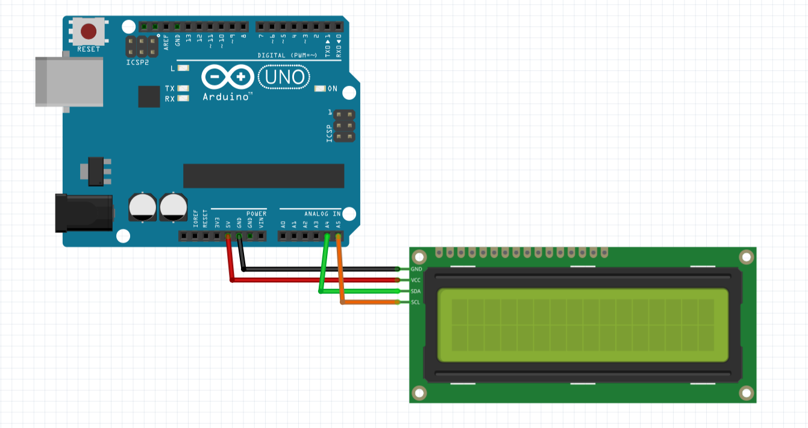
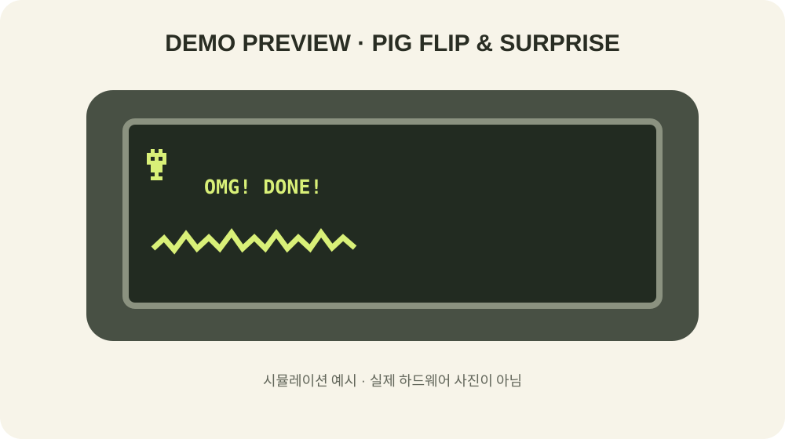

앞구르기 후 깜짝!
동작이 진행도를 보여줘요
돼지는 첫째 줄 첫 칸에서 앞으로 구릅니다. 네 프레임을 지나 한 바퀴를 마칠 때마다 둘째 줄의 균열이 한 칸씩 늘어납니다. 진행 중에는 ROLLING...이 표시됩니다.
균열이 LCD 끝까지 도달하면 돼지는 놀란 얼굴로 바뀌고 OMG! DONE!을 표시한 채 멈춥니다. 반복 모션은 로딩 중에만 일어나고, 누적되는 균열이 완료까지의 진행을 보여 줍니다.
실제 Fritzing 연결도 · Arduino Uno + I²C LCD

Uno: 5V→VCC, GND→GND, A4→SDA, A5→SCL. 다른 보드는 SDA/SCL 핀 위치를 확인하세요.
6개의 5×8 커스텀 문자
- 문자 0–3: 앞구르기 네 자세
- 문자 4: 마지막에 나타나는 놀란 표정
- 문자 5: 바닥을 가르는 균열
- LCD 첫째 줄 첫 칸에서 돼지 모션을 재생
LCD 커스텀 문자 8개 슬롯 중 6개를 사용합니다.
업로드용 스케치
전체 파일: run_bot.ino
동작 화면 예시

시뮬레이션 예시입니다. 과제 제출에는 실제 LCD 동작 사진으로 교체해 주세요.
설명 및 고찰
돼지가 앞구르기를 반복하는 동작은 작고 재미있는 캐릭터 모션이고, 착지할 때마다 균열이 누적되는 변화는 진행 상황을 보여 줍니다. 처음의 반복 로딩과 달리 마지막 프레임에 놀란 얼굴과 완료 문구를 고정해 시작과 끝이 분명하도록 했습니다.
5×8 도트에서는 실제 회전을 부드럽게 묘사하기 어렵습니다. 네 개의 단순화된 자세를 빠르게 전환해 구르는 인상을 만들고, 최종 놀란 얼굴은 눈과 입을 크게 표현했습니다. 150ms 간격은 모션이 끊기지 않도록 한 시작값이며 LCD 모듈 반응에 따라 조정할 수 있습니다.
현재 완료 시점은 16회의 앞구르기로 정해진 시연용 연출입니다. 실제 장치에서는 센서 보정이나 데이터 처리 단계의 완료 상태에 맞춰 균열과 완료 표시를 갱신해야 합니다.